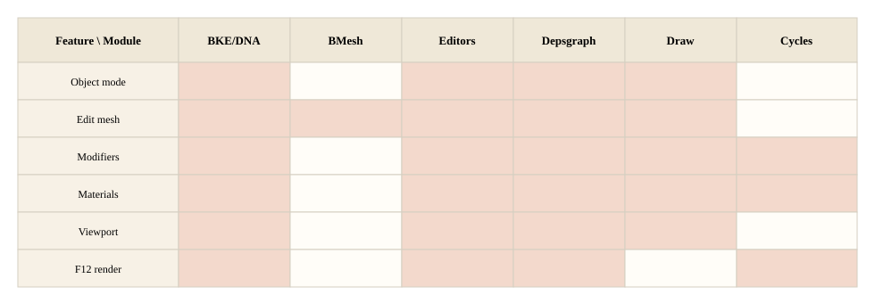

投影 3
按用户功能
从「我在软件里做什么」反查目录。着色块表示这条功能会碰到该模块；空白表示通常不走。

物体模式
选择物体、变换物体、进出编辑模式。editors/object、transform 改 Object / BKE，经 depsgraph 更新 draw。不进 BMesh，除非进入编辑模式。
编辑模式改网格
挤出、切割、点边面选择。editors/mesh 操作 bmesh，写回 Mesh，再求值、重画。深讲：建模。
修改器
参数存在物体上（DNA + RNA 面板）。计算发生在 modifiers + depsgraph。视口和 F12 都吃求值后的网格，所以 Cycles 列也是着色的。
材质与着色
节点画在 nodes/shader。视口由 EEVEE 编译；F12 由 Cycles 编译。两套后端，一套用户节点语义。
视口显示
View3D 选引擎：Workbench 看结构，EEVEE 看近似成片。不经过 Cycles kernel。
F12 渲染
editors/render → render → 引擎。默认学习路径按 Cycles 记。视口像素管线到此停。